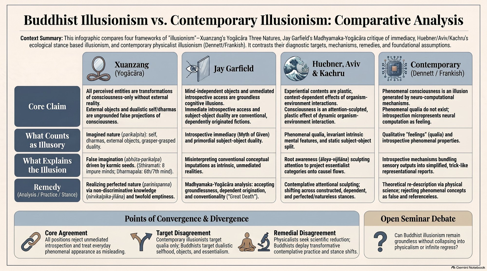
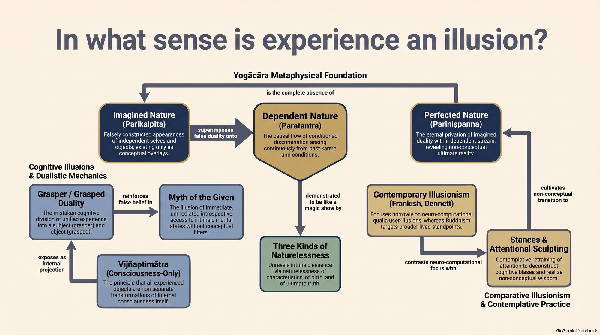
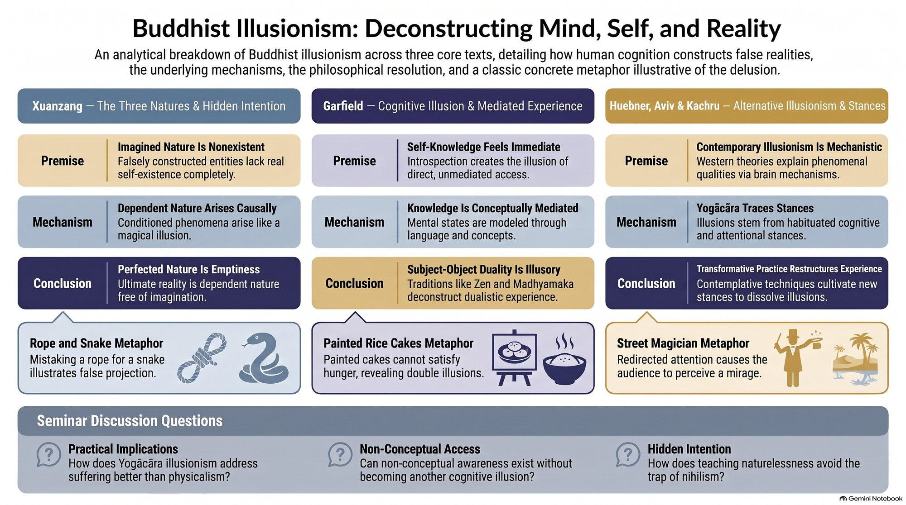

The Classroom · Consciousness in Buddhism · Week 11 · 26 Nov 2026
Reframing the Idealism Debate II: Buddhist Illusionism
If experience is an illusion, what kind of illusion is it, and who is it an illusion for? Xuanzang's three natures, Garfield's case against the immediacy of self-knowledge, and Huebner, Aviv and Kachru's magic show set Yogācāra illusionism against today's illusionists.
1 At a glance 30 seconds
Key questions
- Which parts of experience are illusory on the three-nature model, and which are not?
- Is our knowledge of our own minds immediate, or is the feeling of immediacy itself an illusion?
- How does Yogācāra illusionism differ from contemporary illusionism (Frankish, Dennett) about phenomenal consciousness?
- If illusions come from the stances we take, can practice change what we experience, and the world we share?
Key concepts
Imagined nature (parikalpita)
Self and dharmas, including grasper and grasped, as they are falsely imagined; absolutely nonexistent. — Xuanzang, pp. 281–284
Dependent nature (paratantra)
Mind and mental activities arising from conditions and seeds; real, but like a magical illusion. — Xuanzang, pp. 281, 283–287
Perfected nature (pariniṣpanna)
The dependent nature's permanent emptiness of the imagined; neither the same as nor different from the dependent. — Xuanzang, pp. 281, 285–293
Three kinds of naturelessness
The three natures read as the absence of nature; the Buddha taught 'all dharmas are natureless' with a hidden intention, not as nihilism. — Xuanzang, pp. 294–296
Illusion of immediacy
The conviction that we know our own mental states directly and as they are; a form of Sellars's Myth of the Given. — Garfield, pp. 246–250
Subject-object duality
The felt sense of being a unified subject standing over against a world of objects; for Garfield a second, subtler cognitive illusion. — Garfield, pp. 246–248
Illusionism (contemporary)
The view that phenomenal qualities are illusory, produced when introspective mechanisms present the outputs of many processes as simple and unified. — Huebner, Aviv & Kachru on Frankish and Dennett, pp. 223, 225–226
Tap a concept for its definition.
What you get out of it
- 'Illusory' does not mean 'nonexistent' across the board: for Xuanzang the imagined does not exist, while the dependent exists the way a magician's illusion does.
- Garfield extends the Buddhist diagnosis inward: even first-person access to experience is mediated, so the feeling of immediacy is itself an illusion.
- Huebner, Aviv and Kachru treat illusions as products of stances and attention, which practice can reshape, rather than outputs of fixed mechanisms.
- The step from Week 10 to Week 11: if worlds are constructed through shared stances, then changing the stance changes what is shared.
Cases and evidence
- The street magician's rope and snake Huebner, Aviv & Kachru, pp. 224–225
A magician wraps a rope in a cloth and a snake slithers out; the audience can enjoy the illusion or ask how it is made. - Mirage Garfield, p. 247
To stop walking toward a mirage you first have to know it is one, then learn what causes it. - Painted rice cakes Garfield (Dōgen's Gabyō)
Dōgen turns the saying 'painted rice cakes don't satisfy hunger' around: all our representations are painted rice cakes. - The attractive person Huebner, Aviv & Kachru, p. 229
Candrakīrti: through meditation yogins see the same person as impure and impermanent, so what appears depends on a way of life.
The readings
| Xuanzang (1999) | The Three Natures (Demonstration of Consciousness Only, ch. X) · pp. 281–296 Reads Vasubandhu's verses on the imagined, dependent and perfected natures, reports the Sthiramati and Dharmapāla interpretations, and explains naturelessness. |
| Garfield, Jay L. (2022) | Cognitive Illusion and Immediate Experience · pp. 245–265 Argues, from Candrakīrti, Yogācāra, Śāntarakṣita and Dōgen, that the immediacy of self-knowledge and subject-object duality are cognitive illusions. |
| Huebner, Aviv & Kachru (2022) | The Magic of Consciousness: Sculpting an Alternative Illusionism · pp. 223–244 Contrasts contemporary illusionism with three Buddhist templates (quietism, standpoints, re-description) and a Yogācāra account of stances and practice. |
Where this fits in the course
Week 10 asked how beings can share a world if all is consciousness only. This week asks the follow-up: in what sense is the world we experience an illusion? Xuanzang supplies the scholastic tool, the three natures. Garfield and Huebner, Aviv and Kachru (Kachru again, after last week's 'As if a Stage') bring it into today's debate on illusionism about consciousness. The modernity weeks then ask what this view of mind means for ethics, society and gender.
- 1Buddhist Philosophy of Consciousness in its Historical Context
- 2Consciousness as Dharma: Abhidharma Taxonomy in the Kośa
- 3Sarvāstivāda Epistemology: Does the Eye See?
- 4Sarvāstivāda Metaphysics: Temporality
- 5The Yogācāra Refutation of Early Buddhist Realism
- 6Early Chinese Yogācāra I: Paramārtha's Philosophy of Mind
- 7Early Chinese Yogācāra II: Consciousness and Tathāgatagarbha
- 8Later Chinese Yogācāra I: Redefining Consciousness
- 9Later Chinese Yogācāra II: Intentional Structure of Consciousness
- 10Reframing the Idealism Debate I: A Shared World
- 11Reframing the Idealism Debate II: Buddhist Illusionism
- 12Yogācāra in Modernity: Humanistic Buddhism
- 13Yogācāra in Modernity: Gendering Buddhist Modernism
2 Look

Note: Typos: 'contest-dependent' (context-dependent), 'kormic', 'micropresents', 'causel', 'deplay'. It gives Huebner, Aviv and Kachru's mechanism as 'root awareness (ālaya-vijñāna)'; in the chapter the mechanism is attention sculpted by stances and practice, and the 'root strategy' is the magician's trick, not the store consciousness.


3 Test your understanding
4 quick questions, then 2 to answer in your own words. Nothing is saved or sent.
On Xuanzang's account, which nature is absolutely nonexistent?
What is imagined as self and dharmas, grasper and grasped, does not exist; the dependent exists like an illusion (pp. 281–284).
Whose view does Xuanzang follow on which consciousnesses imagine?
He reports Sthiramati's view, then concludes that only the sixth and seventh have imagination (Dharmapāla) (pp. 282–283).
What does Garfield call the first of the two overarching cognitive illusions?
He links it to Sellars's Myth of the Given; the second illusion is subject-object duality (pp. 246–248).
According to Huebner, Aviv and Kachru, how does Yogācāra illusionism differ from contemporary illusionism?
Their introduction sets out exactly these three contrasts (p. 223).
Why, on the three-nature model, is calling the world 'illusory' not the same as calling it nonexistent?
Only the imagined nature is nonexistent. The dependent nature, the causal flow of mind, really arises from conditions but appears in a misleading way, like a magician's illusion. The perfected nature is that dependent flow seen without the imagined overlay.
Garfield thinks the Buddhist tradition gets self-knowledge 'roughly right'. What claim about introspection does this commit him to?
That introspection is a mediated, perception-like faculty working through concepts and language. So the felt immediacy of our access to our own minds is an illusion, not evidence that experience is simply given.
Podcasts and infographics are generated with Google NotebookLM from the course readings; the brief and quiz are drafted with Claude from the readings and syllabus. I curate what goes up, but AI-generated material can contain mistakes. Use these pages alongside the readings and seminars, and check anything important against the original texts.